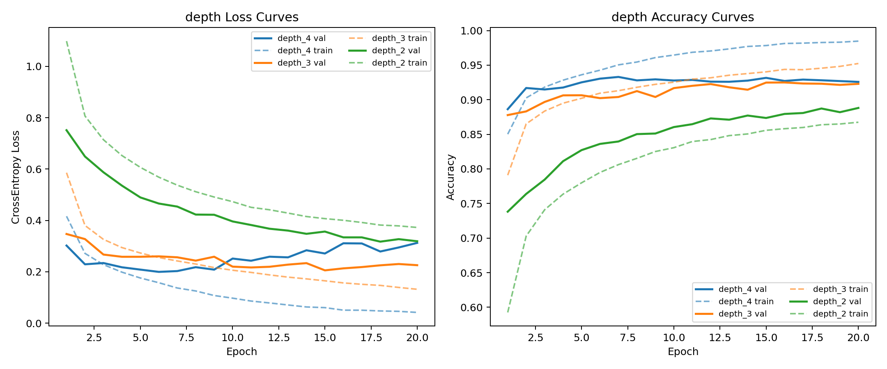
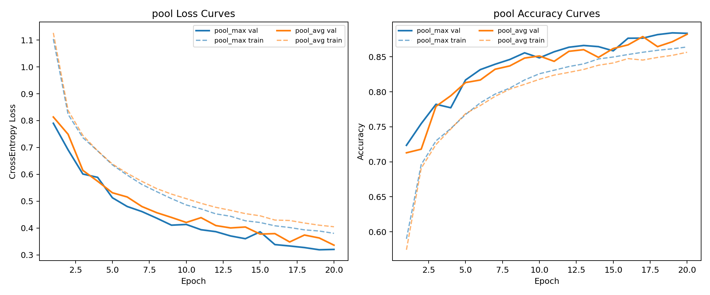
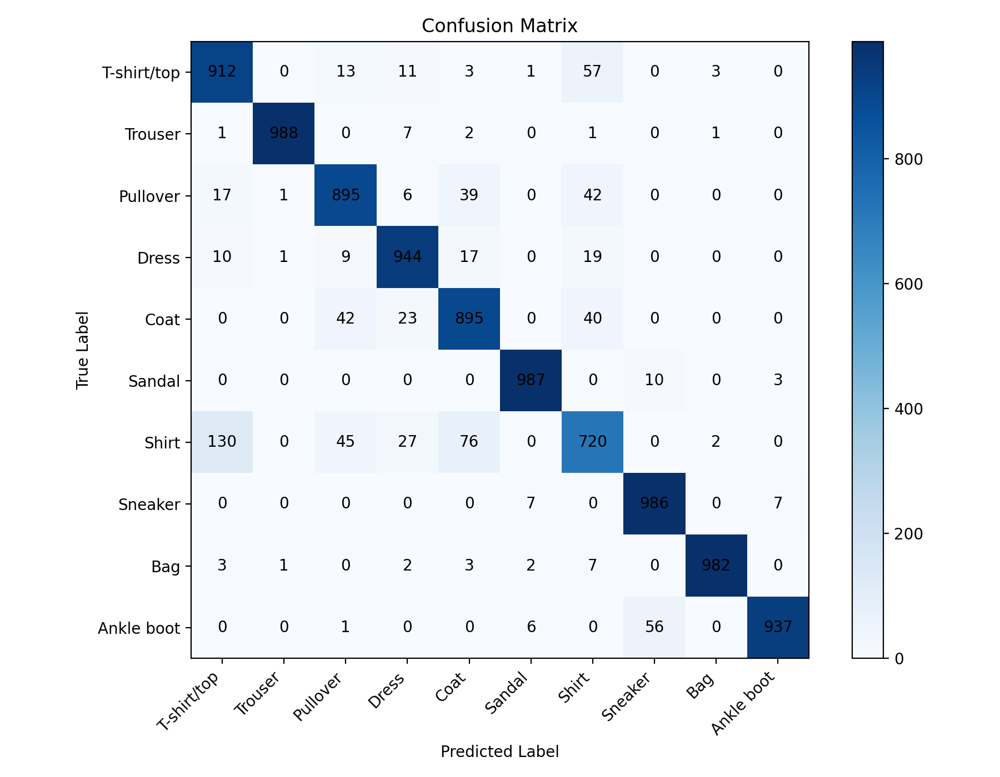
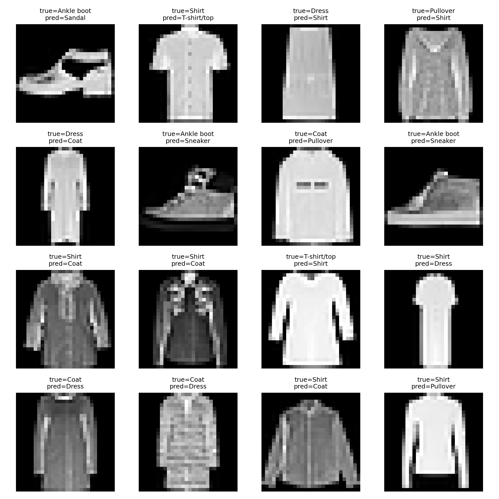

深度学习导论作业 1-2 实验报告
1. 实验任务
本实验以 Fashion-MNIST 数据集为对象，完成 CNN 图像分类任务，并通过控制变量法研究以下三个因素对模型性能的影响：
- 网络深度
- 卷积核大小
- 池化方式
2. 实验环境
- 操作系统：Ubuntu 24.04
- Python 版本：3.10.20
- 深度学习框架：PyTorch 2.11.0+cu130
- 训练设备：NVIDIA GeForce RTX 5060 Ti
3. 数据集与预处理
Fashion-MNIST 是一个常用的服饰图像分类数据集，共包含 10 个类别，图像均为 28×28 的单通道灰度图像。
- 样本规模：训练集 60,000 张，测试集 10,000 张。
- 验证集划分：从训练集中划分出 10%（6,000 张）作为验证集
数据预处理：
- 将图像转换为张量，并将像素值缩放到 \([0, 1]\)
- 按 Fashion-MNIST 的像素均值和方差进行标准化
4. 模型设计
本实验实现了一个可配置的 CNN 分类器，基本结构为：
- 多个卷积块串联，每个卷积块包含：
Conv2d + BatchNorm2d + ReLU + Pooling - 特征提取结束后使用
AdaptiveAvgPool2d将卷积层输出的特征图调整为固定尺寸 - 特征展平后进入两层全连接网络。为了缓解过拟合，在全连接层之间设置了 Dropout 层
模型支持以下超参数配置：
conv_blocks：卷积块数量kernel_size：卷积核大小pool_type：池化方式，max和avgbase_channels：初始通道数dropout：全连接层 dropout 比例
5. 训练参数设置
实验使用以下配置：
{
"conv_blocks": 2,
"base_channels": 32,
"kernel_size": 3,
"pool_type": "max",
"dropout": 0.25,
"learning_rate": 0.001,
"batch_size": 64,
"epochs": 20,
"seed": 42,
"sample_ratio": 1.0,
"num_workers": 4,
"device": "cuda"
}6. 对比实验结果
6.1 网络深度实验
固定卷积核为 \(3 \times 3\)，池化方式为 Max Pooling：
| 模型 | conv_blocks | best_val_acc | test_acc | test_loss |
|---|---|---|---|---|
| depth_2 | 2 | 0.8882 | 0.8814 | 0.3293 |
| depth_3 | 3 | 0.9250 | 0.9184 | 0.2356 |
| depth_4 | 4 | 0.9330 | 0.9246 | 0.2422 |
增加网络深度对性能提升非常明显。从 2 层增加到 3 层时，测试精度提升了近 3.7%。这说明深层网络能够提取出更加复杂的特征信息。在本实验中，4 层结构表现最好，准确率最高。
不同网络深度下的训练与验证曲线见下图：

6.2 卷积核大小实验
固定卷积块数为 2，池化方式为 Max Pooling
| 模型 | kernel_size | best_val_acc | test_acc | test_loss |
|---|---|---|---|---|
| kernel_3 | 3 | 0.8870 | 0.8853 | 0.3255 |
| kernel_5 | 5 | 0.9068 | 0.9047 | 0.2674 |
| kernel_7 | 7 | 0.9120 | 0.9009 | 0.2705 |
在浅层网络中，较大的卷积核（如 \(5 \times 5\)）表现优于 \(3 \times 3\)。这是因为较大的卷积核感受野更大，更容易捕捉到服饰的整体轮廓。
6.3 池化方式实验
固定卷积块数为 2，卷积核为 \(3 \times 3\)：
| 模型 | pool_type | best_val_acc | test_acc | test_loss |
|---|---|---|---|---|
| pool_max | max | 0.8842 | 0.8853 | 0.3315 |
| pool_avg | avg | 0.8822 | 0.8792 | 0.3422 |
最大池化能够保留图像中像素响应最强烈的部分（如边缘、突出的纹理），而平均池化则会对特征进行平滑，导致一些细节丢失。在服饰分类任务中，最大池化显然更合适。
不同池化方式下的训练与验证曲线见下图：

8. 错误样本与混淆矩阵分析
最佳模型（depth_4）的混淆矩阵见下图。

从混淆矩阵可以看出，模型对以下类别的识别效果较好：
- Trouser：
988/1000 - Sandal：
987/1000 - Sneaker：
986/1000 - Bag：
982/1000
这些类别在形状上较为稳定，与其他类别的视觉差异也较为明显，因此识别效果更好。
模型在部分类别之间仍存在较为典型的混淆现象：
Shirt容易被误判为T-shirt/top，共有130个样本T-shirt/top容易被误判为Shirt，共有57个样本Pullover和Coat之间存在明显混淆，分别有39和42个样本Ankle boot与Sneaker之间也存在一定混淆，尤其是Ankle boot -> Sneaker有56个样本
推测造成上述现象的原因主要是：
- 部分类别在轮廓上较为接近，例如衬衫、T 恤、外套和套头衫均属于上衣类服饰
- Fashion-MNIST 图像分辨率较低，仅为
28×28，细节信息有限
部分错分样本见下图。

9. 实验结论
本实验围绕 Fashion-MNIST 图像分类任务构建并训练了卷积神经网络，并对网络深度、卷积核大小和池化方式进行了对比分析。实验结果表明：
- 增加网络深度能够显著提升模型性能，是本实验中影响最大的因素。
- 对于浅层网络，适当增大卷积核有助于提升分类准确率。
- 最大池化优于平均池化，更适合保留服饰图像中的关键局部特征。
- 错误分类主要发生在外观相似的上衣类服饰之间，说明模型已学到大部分有效特征，但仍受限于数据集分辨率和类别相似性。